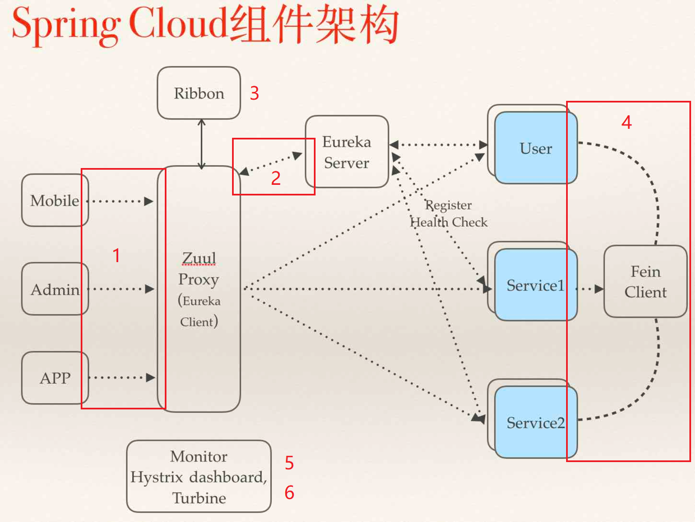

Spring Cloud
Spring Cloud是一系列框架的有序集合。它利用Spring Boot的开发便利性巧妙地简化了分布式系统基础设施的开发，如服务发现注册、配置中心、消息总线、负载均衡、断路器、数据监控等，都可以用Spring Boot的开发风格做到一键启动和部署。Spring并没有重复制造轮子，它只是将目前各家公司开发的比较成熟、经得起实际考验的服务框架组合起来，通过Spring Boot风格进行再封装屏蔽掉了复杂的配置和实现原理，最终给开发者留出了一套简单易懂、易部署和易维护的分布式系统开发工具包。
微服务是可以独立部署、水平扩展、独立访问（或者有独立的数据库）的服务单元，Spring Cloud就是这些微服务的大管家，采用了微服务这种架构之后，项目的数量会非常多，Spring Cloud做为大管家需要管理好这些微服务，自然需要很多工具框架来帮忙。
Spring Cloud的核心功能：分布式/版本化配置、服务注册和发现、路由、服务和服务之间的调用、负载均衡、断路器、分布式消息传递。

各组件配置使用运行流程：
- 请求统一通过API网关（Zuul）来访问内部服务
- 网关接收到请求后，从注册中心（Eureka）获取可用服务
- 由Ribbon进行均衡负载后，分发到后端具体实例
- 微服务之间通过Feign进行通信处理业务
- Hystrix负责处理服务超时熔断
- Turbine监控服务间的调用和熔断相关指标
上图只是Spring Cloud体系的一部分，Spring Cloud共集成了19个子项目，里面都包含一个或者多个第三方的组件或者框架！
Spring Cloud 工具框架：
- Spring Cloud Config 配置中心，利用git集中管理程序的配置。
- Spring Cloud Netflix 集成众多Netflix的开源软件。
- Spring Cloud Bus 消息总线，利用分布式消息将服务和服务实例连接在一起，用于在一个集群中传播状态的变化。
- Spring Cloud for Cloud Foundry 利用Pivotal Cloudfoundry集成你的应用程序。
- Spring Cloud Cloud Foundry Service Broker 为建立管理云托管服务的服务代理提供了一个起点。
- Spring Cloud Cluster 基于Zookeeper, Redis, Hazelcast, Consul实现的领导选举和平民状态模式的抽象和实现。
- Spring Cloud Consul 基于Hashicorp Consul实现的服务发现和配置管理。
- Spring Cloud Security 在Zuul代理中为OAuth2 rest客户端和认证头转发提供负载均衡。
- Spring Cloud Sleuth Spring Cloud应用的分布式追踪系统，和Zipkin，HTrace，ELK兼容。
- Spring Cloud Data Flow 一个云本地程序和操作模型，组成数据微服务在一个结构化的平台上。
- Spring Cloud Stream 基于Redis,Rabbit,Kafka实现的消息微服务，简单声明模型用以在Spring Cloud应用中收发消息。
- Spring Cloud Stream App Starters 基于Spring Boot为外部系统提供spring的集成。
- Spring Cloud Task 短生命周期的微服务，为SpringBooot应用简单声明添加功能和非功能特性。
- Spring Cloud Task App Starters
- Spring Cloud Zookeeper 服务发现和配置管理基于Apache Zookeeper。
- Spring Cloud for Amazon Web Services 快速和亚马逊网络服务集成。
- Spring Cloud Connectors 便于PaaS应用在各种平台上连接到后端像数据库和消息经纪服务。
- Spring Cloud Starters （项目已经终止并且在Angel.SR2后的版本和其他项目合并）。
- Spring Cloud CLI 插件用Groovy快速的创建Spring Cloud组件应用。
当然这个数量还在一直增加…
微服务/Spring Boot/Spring Cloud 三者之间的关系
- 微服务是一种架构的理念，提出了微服务的设计原则，从理论为具体的技术落地提供了指导思想。
- Spring Boot是一套快速配置脚手架，可以基于Spring Boot快速开发单个微服务
- Spring Cloud是一个基于Spring Boot实现的服务治理工具包
Spring Boot专注于快速、方便集成的单个微服务个体，Spring Cloud关注全局的服务治理框架。
如何进行微服务架构演进
当我们将所有的新业务都使用Spring Cloud这套架构之后，就会出现这样一个现象，公司的系统被分成了两部分，一部分是传统架构的项目，一部分是微服务架构的项目，如何让这两套配合起来使用就成为了关键，这时候Spring Cloud里面的一个关键组件解决了我们的问题，就是Zuul。在Spring Cloud架构体系内的所有微服务都通过Zuul来对外提供统一的访问入口，所有需要和微服务架构内部服务进行通讯的请求都走统一网关。如下图：

从上图可以看出我们对服务进行了分类：基础服务、业务服务、前置服务、组合服务。由上到下优先级逐步降低。
基础服务：是一些基础组件，与具体的业务无关。比如：短信服务、邮件服务。这里的服务最容易摘出来做微服务，也是我们第一优先级分离出来的服务。
业务服务：是一些垂直的业务系统，只处理单一的业务类型，比如：风控系统、积分系统、合同系统。这类服务职责比较单一，根据业务情况来选择是否迁移，比如：如果突然有需求对积分系统进行大优化，我们就趁机将积分系统进行改造，是我们的第二优先级分离出来的服务。
前置服务：前置服务一般为服务的接入或者输出服务，比如网站的前端服务、app的服务接口这类，这是我们第三优先级分离出来的服务。
组合服务：组合服务就是涉及到了具体的业务，比如买标过程，需要调用很多垂直的业务服务，这类的服务我们一般放到最后再进行微服务化架构来改造，因为这类服务最为复杂，除非涉及到大的业务逻辑变更，我们是不会轻易进行迁移。
在这四类服务之外，新上线的业务全部使用Sprng Boot/Cloud这套技术栈。就这样，我们从开源项目云收藏开始，上线几个Spring Boot项目，到现在公司绝大部分的项目都是在Spring Cloud这个架构体系中。
经验和教训
架构演化的步骤：
- 在确定使用Spring Boot/Cloud这套技术栈进行微服务改造之前，先梳理平台的服务，对不同的服务进行分类，以确认演化的节奏。
- 先让团队熟悉Spring Boot技术，并且优先在基础服务上进行技术改造，推动改动后的项目投产上线。
- 当团队熟悉Spring Boot之后，再推进使用Spring Cloud对原有的项目进行改造。
在进行微服务改造过程中，优先应用于新业务系统，前期可以只是少量的项目进行了微服务化改造，随着大家对技术的熟悉度增加，可以加快加大微服务改造的范围
传统项目和微服务项目共存是一个很常见的情况，除非公司业务有大的变化，不建议直接迁移核心项目。
服务拆分原则
横向拆分。按照不同的业务域进行拆分，例如订单、营销、风控、积分资源等。形成独立的业务领域微服务集群。
纵向拆分。把一个业务功能里的不同模块或者组件进行拆分。例如把公共组件拆分成独立的原子服务，下沉到底层，形成相对独立的原子服务层。这样一纵一横，就可以实现业务的服务化拆分。
要做好微服务的分层：梳理和抽取核心应用、公共应用，作为独立的服务下沉到核心和公共能力层，逐渐形成稳定的服务中心，使前端应用能更快速的响应多变的市场需求
服务拆分是越小越好吗？微服务的大与小是相对的。比如在初期，我们把交易拆分为一个微服务，但是随着业务量的增大，可能一个交易系统已经慢慢变得很大，并且并发流量也不小，为了支撑更多的交易量，我会把交易系统，拆分为订单服务、投标服务、转让服务等。因此微服务的拆分力度需与具体业务相结合，总的原则是服务内部高内聚，服务之间低耦合。
微服务vs传统开发
使用微服务有一段时间了，这种开发模式和传统的开发模式对比，有很大的不同。
分工不同，以前我们可能是一个一个模块，现在可能是一人一个系统。
架构不同，服务的拆分是一个技术含量很高的问题，拆分是否合理对以后发展影响巨大。
部署方式不同，如果还像以前一样部署估计累死了，自动化运维不可不上。
容灾不同，好的微服务可以隔离故障避免服务整体down掉，坏的微服务设计仍然可以因为一个子服务出现问题导致连锁反应。
给数据库带来的挑战
每个微服务都有自己独立的数据库，那么后台管理的联合查询怎么处理？这应该是大家会普遍遇到的一个问题，有三种处理方案。
严格按照微服务的划分来做，微服务相互独立，各微服务数据库也独立，后台需要展示数据时，调用各微服务的接口来获取对应的数据，再进行数据处理后展示出来，这是标准的用法，也是最麻烦的用法。
将业务高度相关的表放到一个库中，将业务关系不是很紧密的表严格按照微服务模式来拆分，这样既可以使用微服务，也避免了数据库分散导致后台系统统计功能难以实现，是一个折中的方案。
数据库严格按照微服务的要求来切分，以满足业务高并发，实时或者准实时将各微服务数据库数据同步到NoSQL数据库中，在同步的过程中进行数据清洗，用来满足后台业务系统的使用，推荐使用MongoDB、HBase等。
三种方案在不同的公司我都使用过，第一种方案适合业务较为简单的小公司；第二种方案，适合在原有系统之上，慢慢演化为微服务架构的公司；第三种适合大型高并发的互联网公司。
微服务的经验和建议
建议尽量不要使用Jsp
页面开发推荐使用Thymeleaf。Web项目建议独立部署Tomcat，不要使用内嵌的Tomcat，内嵌Tomcat部署Jsp项目会偶现龟速访问的情况。
服务编排
主要的作用是减少项目中的相互依赖。
A -> B -> C -> …… -> H
比如现在有项目A调用项目B，项目B调用项目C…一直到H，是一个调用链，那么项目上线的时候需要先更新最底层的H再更新g…更新C更新B最后是更新项目A。这只是这一个调用链，在复杂的业务中有非常多的调用，如果要记住每一个调用链对开发运维人员来说就是灾难。
改善：尽量的减少项目的相互依赖，就是服务编排，一个核心的业务处理项目，负责和各个微服务打交道。
比如之前是A调用B，B掉用C，C调用D，现在统一在一个核心项目W中来处理，W服务使用A的时候去调用B，使用B的时候W去调用C，举个例子：在第三方支付业务中，有一个核心支付项目是服务编排，负责处理支付的业务逻辑，W项目使用商户信息的时候就去调用“商户系统”，需要校验设备的时候就去调用“终端系统”，需要风控的时候就调用“风控系统”，各个项目需要的依赖参数都由W来做主控。以后项目部署的时候，只需要最后启动服务编排项目即可。
不要为了追求技术而追求技术
确定进行微服务架构改造之前，需要考虑以下几方面的因素：
- 团队的技术人员是否已经具备相关技术基础。
- 公司业务是否适合进行微服务化改造，并不是所有的平台都适合进行微服务化改造，比如：传统行业有很多复杂垂直的业务系统。
- Spring Cloud生态的技术有很多，并不是每一种技术方案都需要用上，适合自己的才是最好的。